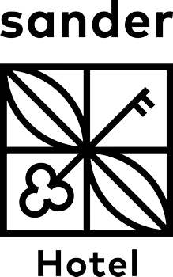

Operation “Phönix”
Konzept zur operativen Sanierung & Plan zur Exzellenz 2026
Konzept zur operativen Sanierung & Plan zur Exzellenz 2026
- John Serato -
Optimierungsprozesse · Bar
Prozessdetails
Peak-Performance Modul
Vergleich der Qualitätskurven ohne Training und mit Sander-SOPs.
Prozessdetails
Peak-Performance Modul
Der Standard-Secco senkt den Wareneinsatz pro Spritz und erhöht den Deckungsbeitrag bei gleichbleibendem Verkaufspreis.
Optimierungsprozesse · Frühstück
Prozessdetails
Vorher/Nachher: Leakage vermeiden, Hausgäste-Vorrang sichern, Kapazität steuern.
Leakage-Risiko: Eintritt unkontrolliert, Zahlung nicht gesichert, Hausgäste-Vorrang schwer steuerbar.
Gate + Vorkasse: Eintritt wird aktiv gesteuert, Zahlung erfolgt vor Platzierung, Auslastung bleibt kontrolliert.
Kontrolle + Kapazitätssteuerung als Standard – messbar im Tagesgeschäft.
Leakage-Stopper
Bis dato: nicht gemessen. Mit PoC wird die Abweichung „Externe Covers/platziert vs. Bons“ täglich sichtbar – Grundlage für Mehrumsatz ohne Mehrkosten.
Erst Messbarkeit schafft Steuerung: PoC-Besetzung, Batch-Größe und Gate-Disziplin werden anhand der Abweichung geführt.
Prozessdetails
Servicewagen im Gastraum bündelt Teller-Rücklauf; Tassen laufen direkt über die Barspülmaschine (1,5 m). Voraussetzung: Bistroreiniger statt Glasreiniger.
Viele Wege & unnötige Last in der Spülküche durch Einzeltransporte.
Bündeln + Trennen: Teller gebündelt zur Spülküche, Tassen direkt zur Barspülmaschine (1,5 m).
Effekt direkt messbar über Laufwege, Clearing und Spül-Backlog.
Beispielhafte Visualisierung: Trips zur Spülküche pro Stunde vor/nach Zwischenstation.
Prozessdetails
Beispielhafte Visualisierung: weniger Rollenwechsel und weniger Clearing-Backlog durch Positionspflicht + Gating.
Vergleich der Stabilitätskurven ohne Peak-Arrest und mit Peak-Arrest.
Kausalitätskette
Optimierungen schaffen messbare Zeitfenster – der PoC-Posten wird ohne zusätzliche Lohnkosten besetzt und sichert Mehrumsatz.
Positionspflicht + Gating → weniger Rollenwechsel, weniger Rework.
Rückläufe bündeln → Trips/h sinken, Kreuzwege verschwinden.
Messbares Zeitfenster entsteht genau in den Peak-Slots – ohne zusätzliche FTE.
Gate + Vorkasse wird besetzbar → Leakage runter, externe Bons rauf.
Optimierungsprozesse · Rezeption
Prozessdetails
Benchmark
240 h/Monat · extern Ø 32 €/h vs. intern Ø 24 €/h → ~1.920 €/Monat Ersparnis.
Morning Peak Readiness
Nacht bereitet Check-outs und Gruppen vor.
Soll: bis 06:15 (≥95%)
Soll: bis 06:30 (≥90%)
Soll: bis 06:30 (100%)
Fokus: Vorbereitung vor dem Peak 07:00–09:00.
Prozessdetails
Visualisierung
Standardfälle laufen über Pre-Check-in/Counter, der Desk übernimmt Ausnahmen & Service.
Self-Check-in reduziert Spitzen und glättet den Anreise-Peak.
Optimierungsprozesse · Technik
Prozessdetails
Optimierungsprozesse · Housekeeping
Prozessdetails
Optimierungsprozesse · Logistik
Prozessdetails
Rahmenbedingungen
Initiativen · Kultur
Prozessdetails